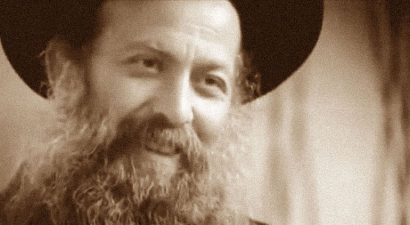
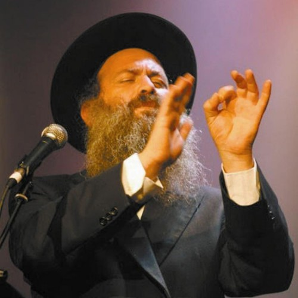
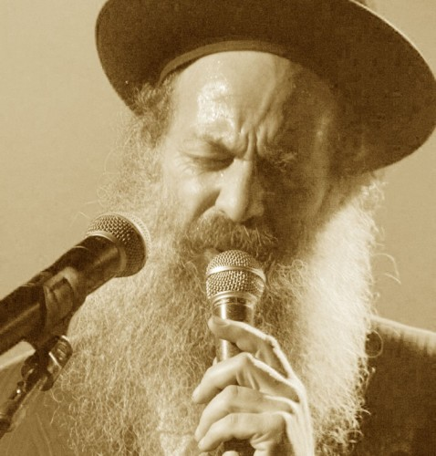

The Actor from "Ushpizin" on His Search for Faith
Once a very well-known secular performer, now a Breslov Hasid, he is one of the most popular musicians, whose songs climb to the top of the Israeli charts. If you have seen the film "Ushpizin" (receiving guests), you will certainly have come to love and remember the lead actor of the film (who also wrote the screenplay), Shuli Rand.
Once a very well-known secular performer, now that he has returned to faith (he is now a Breslov Hasid), he is one of the most popular musicians (songwriter and performer), whose songs climb to the top of the Israeli charts and are covered by many secular performers.
We offer you the interview with Shuli "Stories from Life", in which he talks about his search for faith.
See the source: video in Hebrew with English subtitles. Translated from Hebrew by E. Kalish.

SHULI RAND: I always had a longing for Judaism. Why? Because my Judaism was very musical. I came from a very musical home. So I think it never left me.
From a song: "I don't understand at all how we came up with such an idea, to start without a prayer."
"Ribono shel Olam (Master of the world), to be honest, sometimes I have no strength to live in Your world": a very well-known song of his, in which he speaks with the Most High simply and sincerely, as one speaks with someone close to you. Listen to this song here:
Just as happiness is not something static, so faith is not static and religion is not static. It is a daily war. There are downturns and there are better, clearer periods; to grow, to reach a deeper understanding, a new level, a person must go through certain periods of decline (yeridot). Chazarah bi-teshuvah (turning, literally "returning to the answer") is not a picnic; it is hard work, like the whole of life and the journey through it. It is not that you grew a beard, put on a hat, and that's the end of it. What is inside: that is where your war is.
From a song: "Voices from the past whisper to me to stop, but I keep moving forward even in the dark."

I grew up in a home where culture was given great importance. But until I was eighteen I still studied in yeshivas (Jewish religious schools).
When the process of leaving religion began, it was not something rational. I won't lie and say that I didn't get answers to some philosophical questions. I had strong instincts, a seething, inquisitive soul from a very young age. My leaving the faith began at a very young age. Then I went into the army, and there I was no longer religious. Then I went to study acting. I became an actor, with everything that goes with it. And after many years of working in the theatre something began to happen to me… There are, in general, different paths of turning to faith. Some come to faith after a trauma, some as a result of a revelation or an illumination. With me it was drop by drop, very gradually.
Twenty-five years ago Uri Zohar (a comic actor once very popular in Israel) returned to faith. At that time the understanding was that a person's turning to faith had to bring a complete change of personality. That means: destroy what you have been until now; Uri Zohar, Shuli Rand and so on no longer exist. You must build a new personality. And this new personality must settle into the community.
The wave of those who turned to faith through experience opened a new approach. This approach was that a complete dissolving, a complete renunciation of one's former personality, does not suit everyone by any means and will not be good for them. The new approach says: you do not have to give up who you are, your personality, but on top of that you must build something that comes from your new religious values and priorities. Your former self does not need to be destroyed, but it must be sanctified. (Editor's note: after his return (chazarah bi-teshuvah) Uri Zohar gave up his acting career completely. Shuli Rand, by contrast, writes screenplays, acts in films, writes poems and music and performs them himself.)
I think this is a new kind of Judaism. I think culture and art are a very good way of building relationships and connections between people. Say, attempts to develop dialogue between the religious and secular parts of society often get stuck on political questions or some disagreements: why don't they serve in the army? Why do they do this or that? And the dialogue stops before it even reaches the essential questions. And that becomes an obstacle to moving forward. But culture and creativity help to jump over this. Because people, on the whole, are looking for contact and want to talk. Art helps to step over the secondary and unimportant and go straight to what matters, to the heart of the question.
As I understand it, Judaism is a CONNECTION with Kadosh Baruch Hu, the Holy One, blessed be He. And it is faith in Him and His commandments. That may sound banal. But the truth sometimes looks banal. That is how I understand my connection with Judaism.

I also believe that there is no Jew who can ignore his Jewishness. That is what I believe. I meet a great many people. And again and again the question comes up: is he or isn't he trying to bring me back to faith? The only thing I can say to a person, without putting myself forward, as if from above, or as a know-all, is: "The duty to check is on you. You must make your choice: YES to keep, or NOT to keep, whether it is true or untrue." But ignoring what is your foundation, your basis: from that you cannot run away. In the end you may say that it is a mistaken foundation of many, many generations. But you cannot simply ignore it without taking the trouble to check it, to test it.
If you ask me what troubles me most (and, I think, God Himself too), it is that His children hate one another, being incapable of dialogue. I would like this world to believe the Most High more. For there to be more faith. For the level of faith to rise. That would make me very happy.
Arkadi Duchin and Shuli Rand, "The Gates of Tears"
Ephraim Kalish: Shuli speaks of a very important task of art: to reconcile, to speak a language that allows one to step over what is unimportant, since it is exactly on that that we often stumble and stop. It is precisely the unimportant that sometimes becomes an insurmountable barrier on the way to dialogue. Art makes it possible to concentrate on what is essential and truly important.
Another thing that struck me was his musical Judaism, which he never forgot, even when he went very far away and became completely secular. It is like a magnet, like the scent of the spices during the havdalah ceremony (the separation of the Sabbath from the other days). And that scent draws one all week towards the next meeting on the Sabbath, constantly reminding one of the sweetness of the presence of the Most High. So the melodies of his Judaism reminded him of something; they were a kind of tsitsit (with the sky-blue thread TO REMIND one of Heaven). That means his parents' home was not a dry collection of legalistic mitzvot but was seasoned with creativity: with fragrance and the joy of experiencing the meeting.
 How Should a Believing Artist Respond to Public Acclaim?
How Should a Believing Artist Respond to Public Acclaim? Contemporary Artists Interpret the Passover Haggadah
Contemporary Artists Interpret the Passover Haggadah